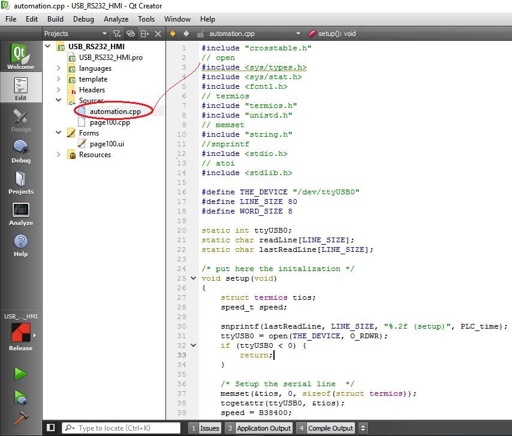

All’interno delle MectApps è disponibile un esempio di utilizzo per fare letture e scritture utilizzando un convertitore USB/RS232. Tale progetto si chiama “USB_RS232_HMI” e lo si trova sotto il seguente percorso: MectApps → AnyTPAC.
La logica del programma si trova all’interno della pagina “automation.cpp”.
L’esempio è realizzato utilizzando un driver Prolific.
